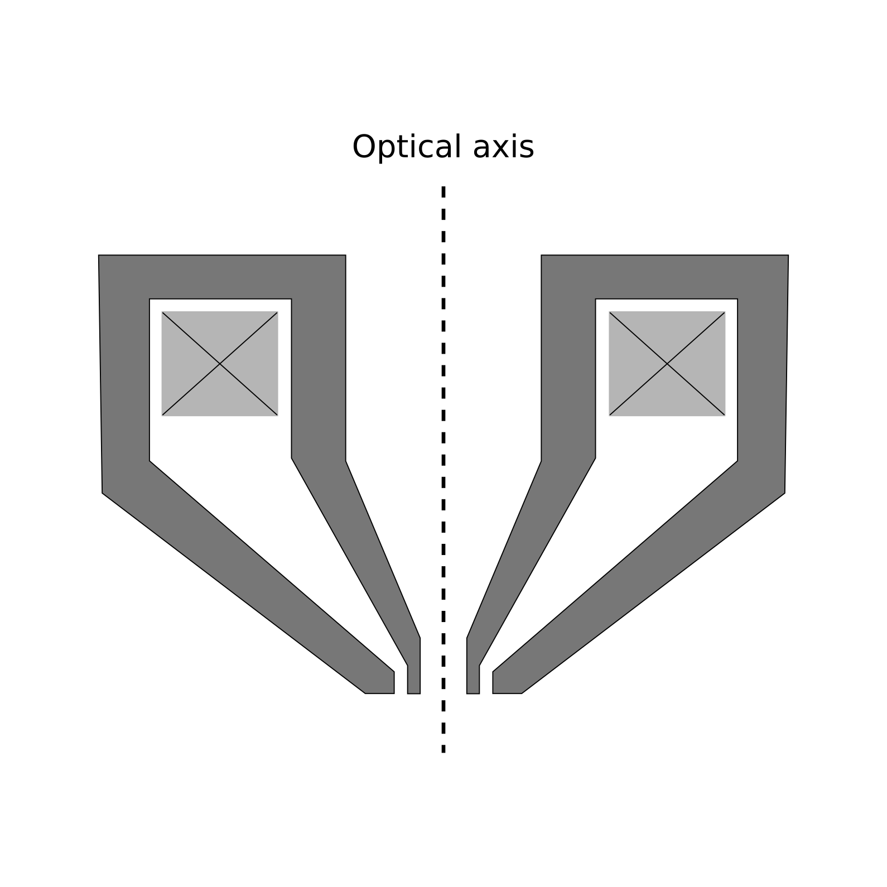
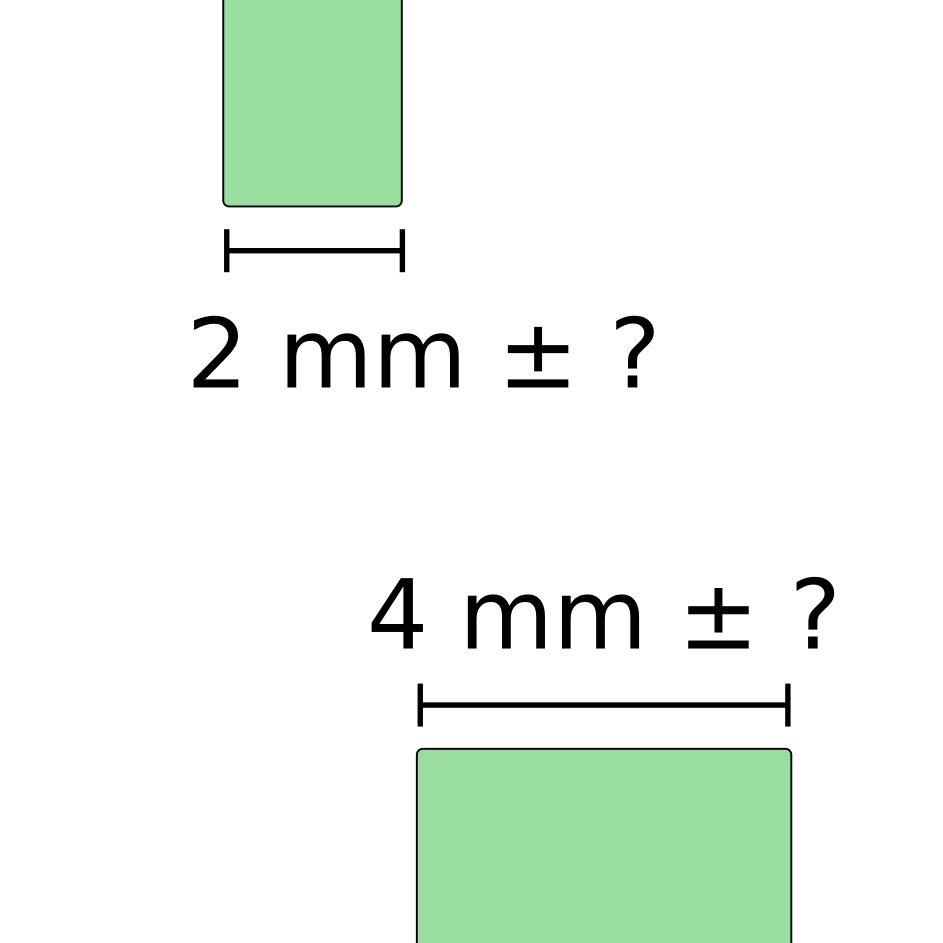

Digital twin technology
Accurately capture the inner workings of your machine in a computer model. Make sure your design decisions have been validated in software before manufacture.

Optimize your electromagnetic components
Study your lenses and eletromagnetic components with high accuracy. Calculate aberrations and gain insights in your system.

Study the most critical tolerances
Gain insights in which parameters impact your machine the most. Traceon allows you to ensure cost effectiveness when designing the most complicated machines.